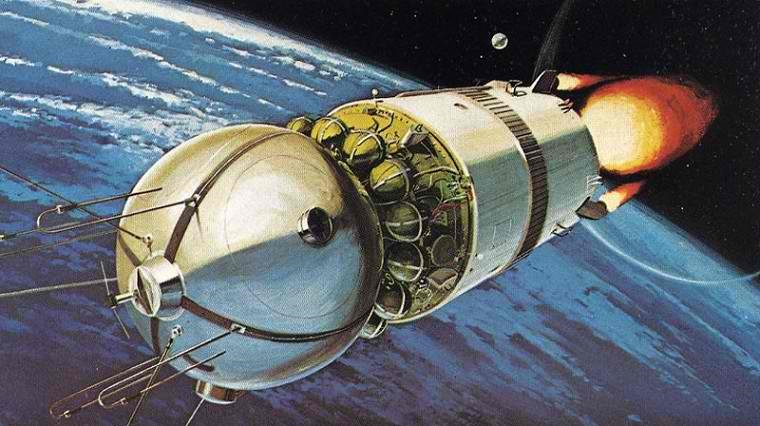

Highlights
Russia/USSR
-

It was the first spaceflight of the Vostok programme and the first manned spaceflight in history. The Vostok 3KA space capsule was launched from Baikonur Cosmodrome on April 12, 1961, with Soviet cosmonaut Yuri Gagarin aboard, Read more... -

On October 12, 1964, the USSR continued its pioneering conquest of space orbiting the first multi-member crew onboard the Voskhod ("sunrise") spacecraft. This achievement was made even more sensational by the fact that three cosmonauts blasted into space after only single-pilot missions. Read more... -

Soyuz is a Russian Spacecraft that carries people and supplies to and fom the International Space Station. Currently, Soyuz is the only spacecraft that carries people to three ISS with a maximum capacity of three passengers. Read more... -

Mir was a space station that operated in low Earth orbit from 1986 to 2001, operated by the Soviet Union and later by Russia. Mir was the first modular space station and was assembled in orbit from 1986 to 1996. Read more...